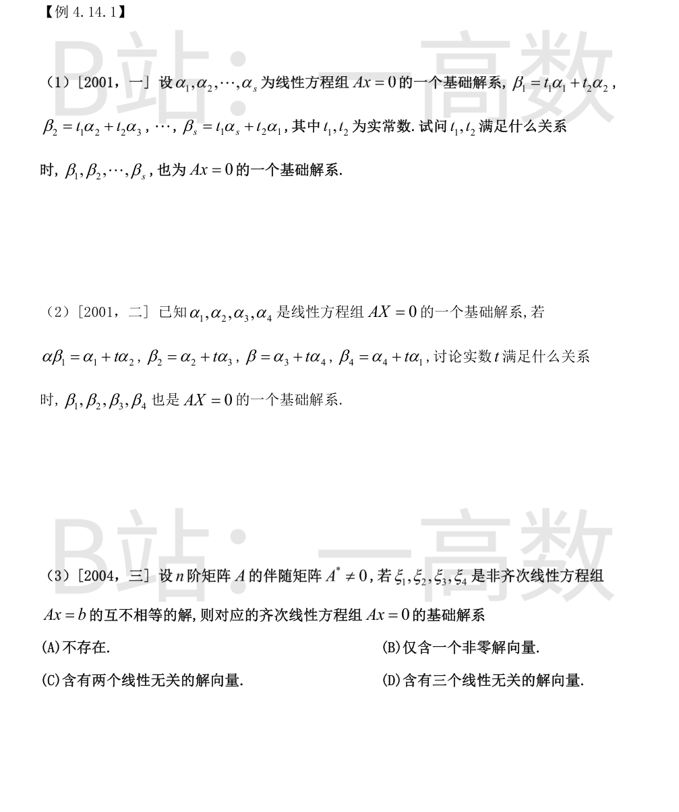
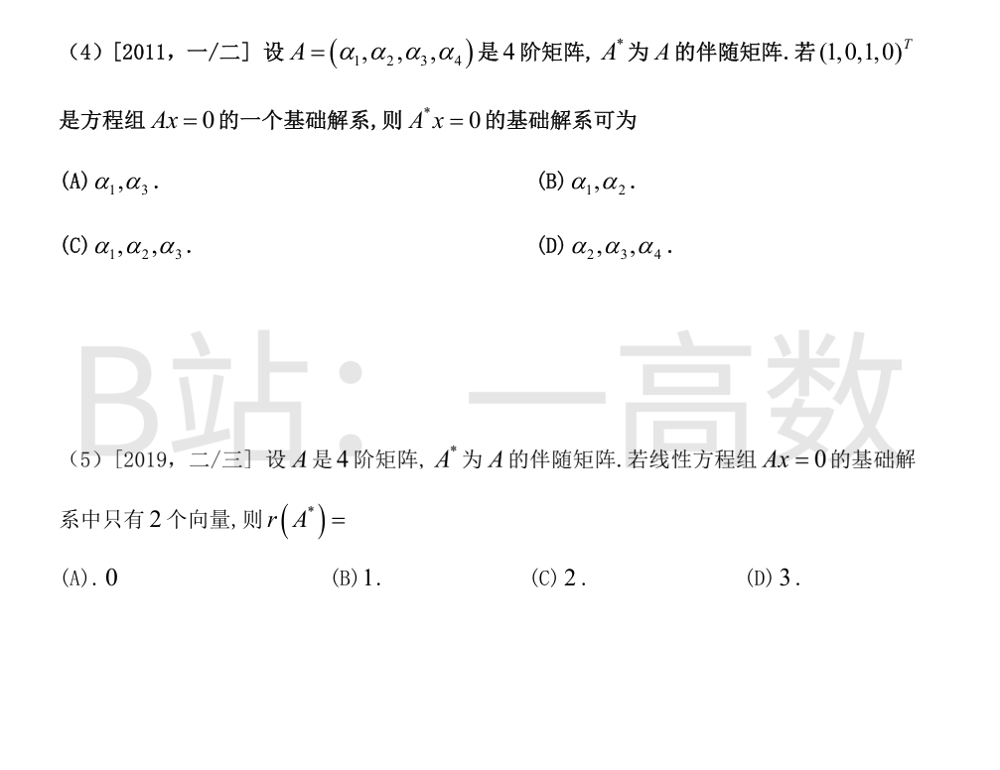
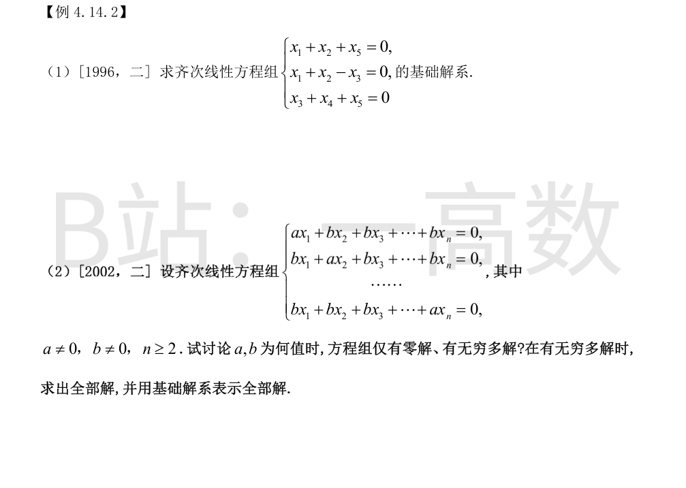
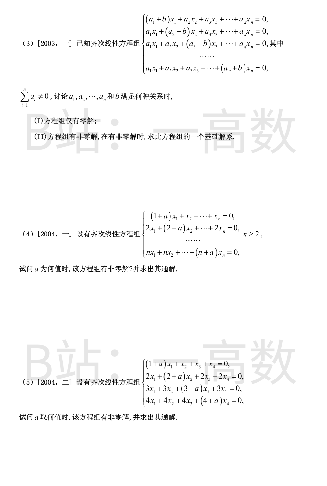
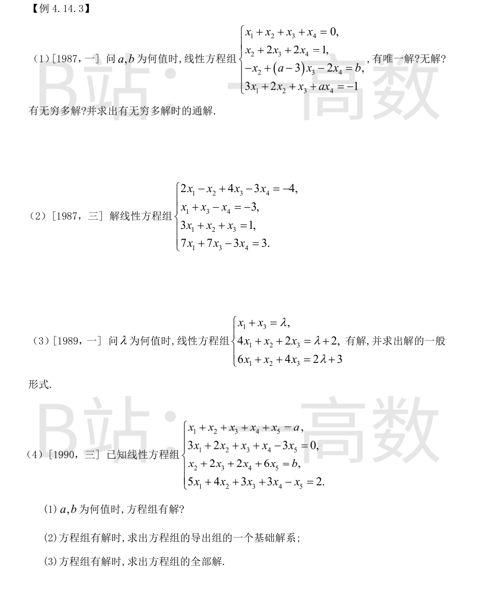
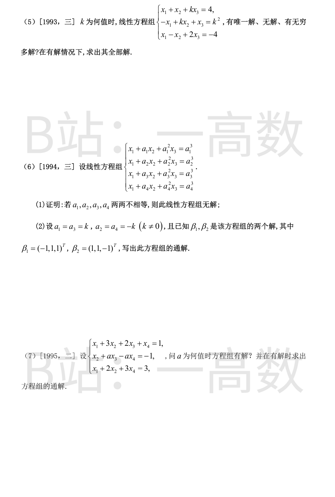
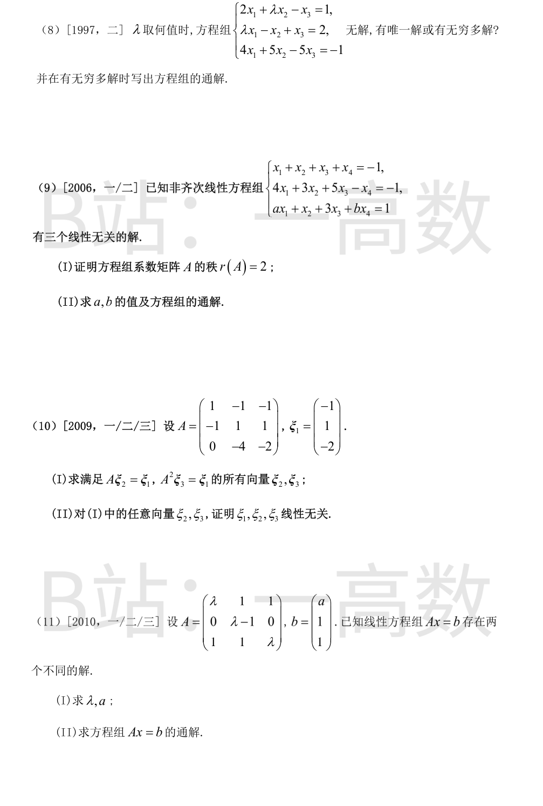

每个 $\beta_j$ 都是 $\alpha_1,\dots,\alpha_s$ 的线性组合，故都是 $Ax=0$ 的解；且向量个数恰为 $s=n-r(A)$，故 $\beta_1,\dots,\beta_s$为基础解系 $\iff$ 它们线性无关。\n\n记 $(\beta_1,\dots,\beta_s)=(\alpha_1,\dots,\alpha_s)C$，其中\n\n$$C=\begin{pmatrix}t_1& & &t_2\\ t_2&t_1& &\\ &\ddots&\ddots&\\ & &t_2&t_1\end{pmatrix}$$\n\n（第 $j$ 列为 $t_1e_j+t_2e_{j+1}$，第 $s$ 列为 $t_2e_1+t_1e_s$。）$C$ 的每行每列非零元只有 $t_1,t_2$，非零行列式项只有两个排列：全取对角元 $t_1$（恒等排列）与全取 $t_2$（轮换排列，符号 $(-1)^{s-1}$），故\n\n$$|C|=t_1^{s}+(-1)^{s-1}t_2^{s}.$$\n\n（验：$s=2$ 得 $t_1^2-t_2^2$，$s=3$ 得 $t_1^3+t_2^3$。）\n\n由 $\alpha_1,\dots,\alpha_s$ 线性无关，$\beta_1,\dots,\beta_s$ 线性无关 $\iff |C|\neq 0$，即 $t_1^{s}+(-1)^{s-1}t_2^{s}\neq 0$。
这是 (1) 中 $s=4,\ t_1=1,\ t_2=t$ 的情形：$|C|=t_1^4+(-1)^{4-1}t_2^4=1-t^4$。\n\n$\beta_1,\dots,\beta_4$ 恒为 $AX=0$ 的解且个数等于维数 4，故为基础解系 $\iff |C|\neq 0\iff t^4\neq 1$，即 $t\neq\pm 1$。
$A^*\neq O\Rightarrow |A^*|=|A|^{\,n-1}\neq 0\Rightarrow |A|\neq 0$ 不成立的信息为 $r(A)\geqslant n-1$。\n\n又 $Ax=b$ 有 4 个互不相等的解 $\Rightarrow$ 有无穷多解 $\Rightarrow r(A)=r(\bar A)<n$。\n\n两者结合得 $r(A)=n-1$，故 $n-r(A)=1$，$Ax=0$ 的基础解系恰含一个非零解向量，选 (B)。
基础解系含 1 个向量 $\Rightarrow n-r(A)=1\Rightarrow r(A)=3$，从而 $r(A^*)=1$（$r(A)=n-1$ 时 $r(A^*)=1$），$A^*x=0$ 的基础解系含 $4-r(A^*)=3$ 个向量，排除 (A)(B)。\n\n由 $A A^*=|A|E$ 及 $|A|=0$ 得 $A^*A=O$，故 $A$ 的列 $\alpha_1,\alpha_2,\alpha_3,\alpha_4$ 都是 $A^*x=0$ 的解。\n\n由 $A(1,0,1,0)^T=\alpha_1+\alpha_3=0$ 知 $\alpha_3=-\alpha_1$，$\alpha_1,\alpha_3$ 线性相关，故 (C) 组秩 $\leqslant 2$，不是基础解系。\n\n$\alpha_1$ 可由 $\alpha_3$ 表示，故 $r(\alpha_2,\alpha_3,\alpha_4)=r(\alpha_1,\alpha_2,\alpha_3,\alpha_4)=r(A)=3$，(D) 的三个向量线性无关，可作为 $A^*x=0$ 的基础解系，选 (D)。
基础解系含 2 个向量 $\Rightarrow n-r(A)=2\Rightarrow r(A)=4-2=2=n-2$。\n\n由伴随矩阵秩的结论：$r(A)=n-2$（$n\geqslant 2$）时 $r(A^*)=0$，即 $A^*=O$。选 (A)。


系数矩阵三行 $(1,1,0,0,1),(1,1,-1,0,0),(0,0,1,1,1)$ 显然线性无关，$r(A)=3$，$n=5$，基础解系含 $5-3=2$ 个向量。\n\n解方程组：由第二式 $x_3=x_1+x_2$；代入第一式 $x_5=-x_1-x_2$；第三式给 $x_4=-(x_3+x_5)=0$。\n\n取 $(x_1,x_2)=(1,0),(0,1)$ 得\n\n$$\xi_1=(1,0,1,0,-1)^T,\qquad \xi_2=(0,1,1,0,-1)^T.$$\n\n（验证：均满足三方程，且线性无关。）
系数矩阵 $A=(a-b)E+bJ$（$J$ 为全 1 矩阵），特征值为 $a-b$（$n-1$ 重）与 $a+(n-1)b$（单重），故\n\n$$|A|=(a-b)^{n-1}\bigl(a+(n-1)b\bigr).$$\n\n(1) $a\neq b$ 且 $a+(n-1)b\neq 0$：$|A|\neq 0$，方程组仅有零解。\n\n(2) $a=b$（$b\neq0$）：$A$ 的每行都是 $(a,a,\dots,a)$，方程组等价于单方程\n\n$$x_1+x_2+\cdots+x_n=0,$$\n\n$r(A)=1$，基础解系含 $n-1$ 个向量，取 $\xi_i=e_1-e_{i+1}\ (i=1,\dots,n-1)$，通解 $x=\sum_{i=1}^{n-1}k_i\xi_i$。\n\n(3) $a+(n-1)b=0$（此时 $a-b=-nb\neq0$，即 $a\neq b$）：$r(A)=n-1$。第 $i$ 个方程为 $(a-b)x_i+b\sum_j x_j=0$，两相邻方程相减得 $(a-b)(x_i-x_{i+1})=0$，故 $x_1=x_2=\cdots=x_n$，即解为\n\n$$x=k(1,1,\dots,1)^T,$$\n\n基础解系 $(1,1,\dots,1)^T$。（代回验证：每方程 $=(a+(n-1)b)\cdot k=0$。）
系数矩阵 $A=C+bE$，其中 $C$ 的每一行都是行向量 $a=(a_1,\dots,a_n)$。$C$ 的特征值为 $\sum a_i$（单重，特征向量 $(1,\dots,1)^T$）与 $0$（$n-1$ 重），故\n\n$$|A|=b^{\,n-1}\Bigl(b+\sum_{i=1}^n a_i\Bigr).$$\n\n(I) $|A|\neq0\iff b\neq0$ 且 $b+\sum a_i\neq0$，此时仅有零解。\n\n(II) 有非零解 $\iff b=0$ 或 $b=-\sum a_i$。\n\n① $b=0$：$A$ 的各行都是 $(a_1,\dots,a_n)$（由 $\sum a_i\neq0$ 该向量非零），$r(A)=1$，方程组即单方程 $a_1x_1+\cdots+a_nx_n=0$，解空间维 $n-1$。设 $a_1\neq0$（若 $a_1=0$，取任一非零 $a_j$ 代替下述 $a_1$ 的位置即可），基础解系取\n\n$$\xi_k=(a_{k+1},0,\dots,0,\,-a_1,\,0,\dots,0)^T\quad(k=1,\dots,n-1,\ -a_1\ 在第\ k+1\ 个分量)，$$\n\n验证 $a\cdot\xi_k=a_1a_{k+1}-a_{k+1}a_1=0$，且显然线性无关。\n\n② $b=-\sum a_i\neq0$：第 $i$ 个方程为 $\sum_j a_jx_j+b\,x_i=0$，即 $(\sum_j a_j)x_i=\sum_j a_jx_j$，右端与 $i$ 无关，故 $x_1=x_2=\cdots=x_n$，且 $b\neq0$ 保证 $r(A)=n-1$，解空间维 1：\n\n$$x=k(1,1,\dots,1)^T,$$\n\n（代回：每方程 $=\sum a_j+b=b+\sum a_j=0$。）基础解系 $(1,1,\dots,1)^T$。
系数矩阵 $A=\mathbf{1}\,(1,2,\dots,n)+aE$，其中 $\mathbf{1}=(1,2,\dots,n)^T$ 不对——准确写法：第 $i$ 行 $=i(1,1,\dots,1)+ae_i$。由矩阵行列式引理，\n\n$$|A|=a^{\,n-1}\Bigl(a+\sum_{i=1}^n i\Bigr)=a^{\,n-1}\Bigl(a+\tfrac{n(n+1)}{2}\Bigr).$$\n\n有非零解 $\iff |A|=0\iff a=0$ 或 $a=-\dfrac{n(n+1)}{2}$。\n\n① $a=0$：第 $i$ 方程为 $i(x_1+\cdots+x_n)=0$，即 $x_1+\cdots+x_n=0$，$r(A)=1$，解空间维 $n-1$，基础解系\n\n$$\xi_i=e_1-e_{i+1}\ (i=1,\dots,n-1),\qquad x=\sum_{i=1}^{n-1}k_i\xi_i.$$\n\n② $a=-\frac{n(n+1)}{2}\neq0$：第 $i$ 方程为 $i\sum_j x_j+a x_i=0$，故 $x_i=-\frac{i}{a}\sum_j x_j\propto i$，即 $x\propto(1,2,\dots,n)^T$。$a\neq0$ 时 $r(A)=n-1$，解空间维 1：\n\n$$x=k(1,2,\dots,n)^T.$$\n\n（验证：第 $i$ 方程 $=i\bigl(\sum_{j=1}^n j\bigr)+a\cdot i=i\bigl[\tfrac{n(n+1)}{2}+a\bigr]=0$。）
这是 (4) 中 $n=4$ 的特例，$|A|=a^3(a+10)$。\n\n① $a=0$：方程组即 $x_1+x_2+x_3+x_4=0$，$r(A)=1$，解空间维 3，\n\n$$\xi_1=(1,-1,0,0)^T,\ \xi_2=(1,0,-1,0)^T,\ \xi_3=(1,0,0,-1)^T,$$\n\n通解 $x=k_1\xi_1+k_2\xi_2+k_3\xi_3$。\n\n② $a=-10$：方程为 $i\sum_j x_j-10x_i=0$，解 $x=k(1,2,3,4)^T$（$r(A)=3$，验证：第 $i$ 方程 $=10i-10i=0$）。\n\n③ 其余 $a$：$|A|\neq0$，仅有零解。



增广矩阵消元：$r_4-3r_1=(0,-1,-2,a-3|-1)$；$r_3+r_2=(0,0,a-1,0|b+1)$；$r_4+r_2=(0,0,0,a-1|0)$：\n\n$$\bar A\to\begin{pmatrix}1&1&1&1&0\\0&1&2&2&1\\0&0&a-1&0&b+1\\0&0&0&a-1&0\end{pmatrix}$$\n\n① $a\neq1$：$r(A)=r(\bar A)=4$，唯一解。回代：$x_4=0,\ x_3=\frac{b+1}{a-1},\ x_2=1-\frac{2(b+1)}{a-1},\ x_1=-1+\frac{b+1}{a-1}$。\n\n② $a=1,\ b\neq-1$：出现矛盾行 $0=b+1\neq0$，无解。\n\n③ $a=1,\ b=-1$：$r(A)=r(\bar A)=2<4$，无穷多解，自由量 $x_3=c_1,x_4=c_2$：\n\n$$x_2=1-2c_1-2c_2,\qquad x_1=-x_2-x_3-x_4=-1+c_1+c_2,$$\n\n$$x=(-1,1,0,0)^T+c_1(1,-2,1,0)^T+c_2(1,-2,0,1)^T.$$
消元（$r_1\leftrightarrow r_2$ 后）：$r_1-2r_2'=(0,-1,2,-1|2)$，$r_3-3r_2'=(0,1,-2,3|10)$，$r_4-7r_2'=(0,0,0,4|24)$。\n\n后两式相加：$2x_4=12$，又 $4x_4=24$，均给 $x_4=6$（相容）。\n\n由 $x_2-2x_3+3x_4=10$ 得 $x_2=2x_3-8$；由 $x_1+x_3-x_4=-3$ 得 $x_1=3-x_3$。\n\n取 $x_3=c$：\n\n$$x=(3,-8,0,6)^T+c(-1,2,1,0)^T.$$\n\n（验：特解 $(3,-8,0,6)$ 满足全部四方程；方向 $(−1,2,1,0)$ 满足导出组。）
增广矩阵消元：$r_3-r_2=(2,0,2|\lambda+1)$，$r_3-2r_1=(0,0,0|1-\lambda)$：\n\n$$\bar A\to\begin{pmatrix}1&0&1&\lambda\\4&1&2&\lambda+2\\0&0&0&1-\lambda\end{pmatrix}$$\n\n故有解 $\iff\lambda=1$，此时 $r(A)=r(\bar A)=2<3$。\n\n$\lambda=1$：$x_1+x_3=1,\ x_2=3-4x_1-2x_3=3-4(1-x_3)-2x_3=-1+2x_3$。取 $x_3=c$：\n\n$$x=(1,-1,0)^T+c(-1,2,1)^T.$$\n\n（验：特解满足三方程；方向 $(-1,2,1)$ 满足导出组。）
(1) 消元：$r_2-3r_1=(0,-1,-2,-2,-6|-3a)$，$r_4-5r_1=(0,-1,-2,-2,-6|2-5a)$。\n\n$r_4-r_2$：$0=2-2a$；$r_2+r_3$：$0=b-3a$。故有解 $\iff a=1,\ b=3$，此时 $r(A)=r(\bar A)=2<5$。\n\n(2) $a=1,b=3$ 时继续化简得同解方程组\n\n$$\begin{cases}x_1+x_2+x_3+x_4+x_5=1\\ x_2+2x_3+2x_4+6x_5=3\end{cases}$$\n\n自由量 $x_3,x_4,x_5$：$x_2=3-2x_3-2x_4-6x_5,\ x_1=-2+x_3+x_4+5x_5$。分别取 $(x_3,x_4,x_5)=(1,0,0),(0,1,0),(0,0,1)$：\n\n$$\xi_1=(1,-2,1,0,0)^T,\quad \xi_2=(1,-2,0,1,0)^T,\quad \xi_3=(5,-6,0,0,1)^T.$$\n\n(3) 取自由量全 0 得特解 $(-2,3,0,0,0)^T$，全部解\n\n$$x=(-2,3,0,0,0)^T+c_1\xi_1+c_2\xi_2+c_3\xi_3.$$\n\n（验：特解代入四方程得 $1,0,3,2$，吻合；各 $\xi_i$ 满足导出组。）
系数行列式\n\n$$D=\begin{vmatrix}1&1&k\\-1&k&1\\1&-1&2\end{vmatrix}=-(k-4)(k+1).$$\n\n① $k\neq4,-1$：唯一解。克拉默法则：$D_1=-k(k-4)(k+2),\ D_2=-(k-4)(k^2+2k+4),\ D_3=2k(k-4)$，故\n\n$$x_1=\frac{k(k+2)}{k+1},\qquad x_2=\frac{k^2+2k+4}{k+1},\qquad x_3=-\frac{2k}{k+1}.$$\n\n（验 $k=1$：$x=(\tfrac32,\tfrac72,-1)$，代入原方程组成立。）\n\n② $k=4$：消元得 $r_2+r_1=(0,5,5|20)$，$r_3-r_1=(0,-2,-2|-8)$，即两个方程同为 $x_2+x_3=4$；$r(A)=r(\bar A)=2$，无穷多解：$x_2=4-x_3,\ x_1=-3x_3$，\n\n$$x=(0,4,0)^T+c(-3,-1,1)^T.$$\n\n③ $k=-1$：$r_1+r_2$ 给 $0=5$，矛盾，无解。
(1) 增广矩阵的行列式为范德蒙德行列式\n\n$$|\bar A|=\begin{vmatrix}1&a_1&a_1^2&a_1^3\\1&a_2&a_2^2&a_2^3\\1&a_3&a_3^2&a_3^3\\1&a_4&a_4^2&a_4^3\end{vmatrix}=\prod_{1\le i<j\le4}(a_j-a_i)\neq0\ (两两不等),$$\n\n故 $r(\bar A)=4$，而 $r(A)\leqslant3$（$A$ 只有 3 列），$r(A)<r(\bar A)$，方程组无解。\n\n(2) 此时第 1、3 个方程相同，第 2、4 个方程相同，方程组等价于\n\n$$\begin{cases}x_1+kx_2+k^2x_3=k^3\\ x_1-kx_2+k^2x_3=-k^3\end{cases}\quad(k\neq0,\ r=2,\ n-r=1).$$\n\n$\beta_1-\beta_2=(-2,0,2)^T$ 是导出组的解且非零，故为导出组的基础解系。通解\n\n$$x=\beta_1+c(\beta_1-\beta_2)=(-1,1,1)^T+c(-2,0,2)^T.$$
增广矩阵消元：$r_3-r_1=(0,-1,-2,2|2)$；$r_3+r_2=(0,0,a-2,2-a|1)$：\n\n$$\bar A\to\begin{pmatrix}1&3&2&1&1\\0&1&a&-a&-1\\0&-1&-2&2&2\\0&0&a-2&2-a&1\end{pmatrix}$$\n\n① $a=2$：末行变为 $(0,0,0,0|1)$，矛盾，无解（也可由 $r_3+r_2-(r_3-r_1)=r_2$ 两侧比较右端得 $-1\neq2$）。\n\n② $a\neq2$：$r(A)=r(\bar A)=3<4$，无穷多解。末行：$(a-2)(x_3-x_4)=1$，即 $x_3-x_4=\frac1{a-2}$。取 $x_4=c$：$x_3=c+\frac1{a-2}$；$x_2=-1-a(x_3-x_4)=-1-\frac{a}{a-2}$；$x_1=1-3x_2-2x_3-x_4=\frac{7a-10}{a-2}-3c$。\n\n$$x=\Bigl(\frac{7a-10}{a-2},\ \frac{2-2a}{a-2},\ \frac{1}{a-2},\ 0\Bigr)^T+c(-3,0,1,1)^T.$$\n\n（验 $a=3$：特解 $(11,-4,1,0)$ 满足三方程 $1,-1,3$；方向 $(-3,0,1,1)$ 满足导出组。）
系数行列式\n\n$$D=\begin{vmatrix}2&\lambda&-1\\\lambda&-1&1\\4&5&-5\end{vmatrix}=5\lambda^2-\lambda-4=(\lambda-1)(5\lambda+4).$$\n\n① $\lambda\neq1$ 且 $\lambda\neq-\frac45$：$D\neq0$，唯一解。\n\n② $\lambda=1$：消元：$r_1+r_2$ 给 $3x_1=3$，即 $x_1=1$；$r_3-2r_1=(0,3,-3|-3)$ 即 $x_2-x_3=-1$，与第二方程 $-(x_2-x_3)=1$ 相容，$r(A)=r(\bar A)=2$：\n\n$$x=(1,-1,0)^T+c(0,1,1)^T.$$\n\n③ $\lambda=-\frac45$：三方程分别乘 5：$10x_1-4x_2-5x_3=5$；$-4x_1-5x_2+5x_3=10$；$4x_1+5x_2-5x_3=-1$。后两式相加得 $0=9$，矛盾，无解。
(I) 设三个线性无关的解为 $\xi_1,\xi_2,\xi_3$，则 $\xi_2-\xi_1,\ \xi_3-\xi_1$ 是导出组 $Ax=0$ 的两个解。若它们线性相关，则 $\xi_3-\xi_1=k(\xi_2-\xi_1)$，得 $\xi_3=(1-k)\xi_1+k\xi_2$ 与线性无关矛盾，故线性无关，于是 $n-r(A)\geqslant2$，即 $r(A)\leqslant2$。\n\n又 $A$ 的前两行 $(1,1,1,1)$ 与 $(4,3,5,-1)$ 不成比例，$r(A)\geqslant2$。故 $r(A)=2$。\n\n(II) $r(A)=2$ 且有解，故 $r(\bar A)=2$。消元：$r_2-4r_1=(0,-1,1,-5|3)$；$r_3-ar_1=(0,1-a,3-a,b-a|1+a)$；再 $r_3+(1-a)r_2$：\n\n$$(0,\ 0,\ 4-2a,\ b+4a-5\,|\,4-2a).$$\n\n须此行系数全为零：$4-2a=0$ 且 $b+4a-5=0$，得 $a=2,\ b=-3$。\n\n此时同解方程组 $x_1+x_2+x_3+x_4=-1,\ -x_2+x_3-5x_4=3$，自由量 $x_3,x_4$：\n\n$$x_2=x_3-5x_4-3,\qquad x_1=2-2x_3+4x_4,$$\n\n$$x=(2,-3,0,0)^T+c_1(-2,1,1,0)^T+c_2(4,-5,0,1)^T.$$\n\n（验：特解 $(2,-3,0,0)$：$-1,-1,4-3=1$ ✓。）
先算 $A\xi_1=(0,0,0)^T$（直接相乘验证），即 $\xi_1\in N(A)$。\n\n$$A^2=\begin{pmatrix}2&2&0\\-2&-2&0\\4&4&0\end{pmatrix}.$$\n\n(I) 解 $A\xi_2=\xi_1$：$\bar A\to\begin{pmatrix}1&-1&-1&-1\\0&0&1&1\\0&0&0&0\end{pmatrix}$（$r_2+r_1$ 为零行，$r_3+4r_1=(0,0,-6|-6)$），得 $x_3=1,\ x_1=x_2$：\n\n$$\xi_2=(0,0,1)^T+k_1(1,1,0)^T.$$\n\n解 $A^2\xi_3=\xi_1$：即 $2x_1+2x_2=-1$（三行同解），$x_1=-\frac12-x_2$，$x_2,x_3$ 自由：\n\n$$\xi_3=\Bigl(-\frac12,0,0\Bigr)^T+k_2(-1,1,0)^T+k_3(0,0,1)^T.$$\n\n(II) 设 $k_1\xi_1+k_2\xi_2+k_3\xi_3=0$。两边左乘 $A^2$：$k_1A^2\xi_1+k_2A^2\xi_2+k_3A^2\xi_3=0$。由 $A\xi_1=0$ 得 $A^2\xi_1=0$；由 $A\xi_2=\xi_1$ 得 $A^2\xi_2=A\xi_1=0$；$A^2\xi_3=\xi_1$。故 $k_3\xi_1=0$，而 $\xi_1\neq0$，得 $k_3=0$。\n\n于是 $k_1\xi_1+k_2\xi_2=0$，左乘 $A$：$k_1A\xi_1+k_2A\xi_2=k_2\xi_1=0$，得 $k_2=0$；进而 $k_1\xi_1=0$ 得 $k_1=0$。故 $\xi_1,\xi_2,\xi_3$ 线性无关。
存在两个不同解 $\Rightarrow$ 有无穷多解 $\Rightarrow |A|=0$ 且 $r(A)=r(\bar A)<3$。\n\n$$|A|=(\lambda-1)\begin{vmatrix}\lambda&1\\1&\lambda\end{vmatrix}=(\lambda-1)^2(\lambda+1),$$\n\n故 $\lambda=1$ 或 $\lambda=-1$。\n\n$\lambda=1$：$A$ 的第二行全为零，而 $b_2=1$，方程 $0=1$ 矛盾，舍去。\n\n$\lambda=-1$：$A=\begin{pmatrix}-1&1&1\\0&-2&0\\1&1&-1\end{pmatrix}$。第二方程 $-2x_2=1$ 给 $x_2=-\frac12$。第一、三方程相加：$2x_2=a+1$，即 $-1=a+1$，得 $a=-2$。此时 $r(A)=r(\bar A)=2$。\n\n解方程组：$x_2=-\frac12$；$-x_1+x_2+x_3=-2\Rightarrow x_1=x_3+\frac32$。取 $x_3=c$：\n\n$$x=\Bigl(\frac32,-\frac12,0\Bigr)^T+c(1,0,1)^T.$$\n\n（验：特解：$-\frac32-\frac12=-2$ ✓，$1$ ✓，$\frac32-\frac12=1$ ✓。）